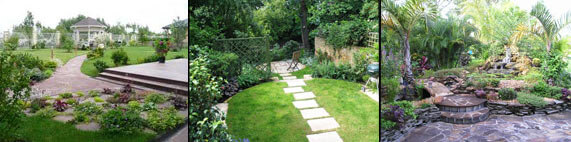

Дорожно-строительная компания «Асфальт-Строй» выполнит все работы по благоустройству территории. Благоустройство территории - важнейшая задача при освоении любого участка, будь то частный дачный участок или же большой городской микрорайон. Для качественного благоустройства территории следует использовать материалы наиболее прочные и морозостойкие, ведь все архитектурные и конструкционные элементы, созданные в процессе благоустройства территории, должны будут выдерживать значительные нагрузки и внешние воздействия. Наша дорожно-строительная компания «АСФАЛЬТ-СТРОЙ» имеет свою собственную производственную базу с богатым парком спецтехники, опытными специалистами и все возможными ресурсами, позволяющими нам ни от кого не зависеть, производить благоустройство территории на больших площадях и выполнять работы любой сложности.
Очень важно определить до благоустройство территории все детали производства, точный дизайн и функциональность. Это убережет от сбоев и переделок, что вызывает лишние затраты. Лучший способ этого избежать - находится в близком общении с нашими опытными специалистами. Они помогут Вам подобрать материал для дорожек, газонов и других частей ландшафта, разработать дизайн, определить возможности вашего участка. Профессионалы с многолетним опытом работы порекомендуют форму и качество газонов, сорта растений, расскажут, какой уход требуется за газоном, включающую стрижку, прополку, подкормку, поливку, какой свет установить и много другого, что поможет Вам создать свой мир на собственном участке, которым Вы сможете по праву гордиться.